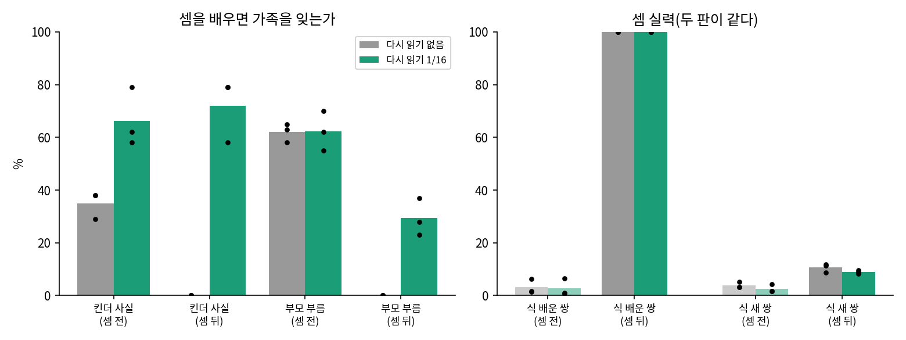

유치원 숫자 공부: 계산을 따로 가르치면 루나는 무엇을 배울까
우리 루나에게: 계산을 배우면 가족을 잊을까
연습용 루나에서 정한 방법은 셋이다. 숫자는 자리마다 자르고, 이야기와 식 줄을 함께 이어 읽힌 뒤, 답 칸만 채점하는 지도 파인튜닝으로 이야기 물음까지 올린다. 강화학습은 지도 파인튜닝을 마친 뒤에는 할 일이 거의 없었지만, 정답 확인기가 무엇을 하는지 보려고 같은 차례에 둔다. 이제 숫자 규칙, 이어 읽기, 지도 파인튜닝을 대화를 배운 우리 루나에게 건다. 이 루나는 동화를 읽고, 묻는 말에 답하는 법과 킨더테일즈 이야기와 정체성 대화를 차례로 배웠다.
연습용 루나에서 건지지 못한 것도 하나 있다. 아라비아 숫자로 계산을 배우고 「three is 3.」 같은 대응까지 읽은 루나에게 「eight plus six is」처럼 낱말로 적은 계산을 물으면, 숫자로도 낱말로도 읽히지 않은 쌍에서 0.0% 였다(sources/counting/transfer2_a.out). 숫자로 배운 계산은 낱말로 옮겨 가지 않았고, 옮겨 간다는 쪽에 유자차를 걸었던 민준이 내기에 졌다.
우리 루나가 걸어온 길
앞 장들의 실험은 장마다 갈라져 나온 실험용 루나로 했다. 우리 루나는 그 장들에서 정한 방법을 한 줄로 이어, 자리마다 숫자 규칙을 넣은 토크나이저로 동화부터 다시 밟았다. 규칙을 넣자 학습 글이 552,651,810 토큰에서 552,675,767 토큰으로, 「 3」을 공백과 숫자로 나눈 만큼 늘었다(sources/tokens/encode_dataset.out, sources/mainline/README.md 「연결 시험」). 동화 단계는 RTX 4090 한 장에서 15.5분이 걸렸고(sources/mainline/runs/v1d1_replay16/P0_s1.out), 바이트당 비트는 연습용 루나(0.4259)와 같은 0.4253~0.4261 이었다. 동화를 읽는 실력은 숫자 규칙과 상관이 없었다.
정체성 대화 단계부터는 줄이 둘로 갈린다. 할머니 실험 뒤에 정한 대로 배치 32 줄 가운데 2 줄을 앞 단계 글로 채운 줄(1/16)과, 대조로 남겨 둔 다시 읽기 없는 줄이다. 아래는 단계마다 같은 시험으로 잰 값이다(씨앗 셋의 범위, sources/mainline/runs/v1d1/panel_summary.out, sources/mainline/runs/v1d1_replay16/panel_summary.out).
| 단계 | 새로 배운 것 | 다시 읽기 | 바이트당 비트 | 킨더 열두 사실 바로 묻기 | 부모 부름 | 식 배운 쌍 |
|---|---|---|---|---|---|---|
| 동화 | 타이니스토리즈 | 0.4253~0.4261 | 0~4% | 0.8~5.3% | ||
| 묻는 말에 답하기 | 기본 질문 답변 | 0.4407~0.4415 | 0~4% | 4.0~6.9% | ||
| 킨더테일즈 | 가족 열두 사실 이야기 | 0.4284~0.4293 | 71~79% | 0.2~5.0% | ||
| 정체성 대화 | 말투 대화와 정체성 대화(16.7%) | 없음 | 0.4419~0.4432 | 29~38% | 58~65% | 1.5~6.2% |
| 정체성 대화 | 같음 | 1/16 | 0.4443~0.4456 | 58~79% | 55~70% | 0.7~6.4% |
(「킨더 열두 사실 바로 묻기」는 「Who is Luna’s Daddy?」처럼 킨더테일즈 사실을 바로 묻고 그리디 답을 채점한 값으로, 할머니 실험에서 잰 것과 같은 방식이다. 정체성 대화를 섞는 비율을 고를 때 쓴 「대화로 묻는 이야기 사실 24 문항(엄격 채점)」과는 다른 시험이다. 부모 부름은 대화를 배운 뒤부터 적었다.)
다시 읽기 없는 줄은 정체성 대화를 배우며 킨더 사실이 71~79% 에서 29~38% 로 줄었고, 1/16 줄은 58~79% 로 대부분 지켰다. 이제 두 줄에 똑같이 계산을 가르친다.

연습용에서 다 해 봤으니까 그대로 돌리면 되지. 셈 이어 읽기 1,000 스텝, 지도 파인튜닝 600, 강화학습 300.

다시 읽기 없는 줄은 할머니 때처럼 될걸. 계산 글만 1,900 스텝을 읽히는 거잖아.

1/16 줄도 장담은 못 해요. 할머니 때는 킨더테일즈 이야기 전부를 섞었고, 16분의 1 이 대화 단계에서는 버텼지만 계산 단계에서도 버티는지는 아직 몰라요. 두 줄을 나란히 돌려 봐요.
함께 읽힌 판은 대화 단계부터 배치 32 줄 가운데 2 줄을 옛 글로 채웠다. 옛 글은 킨더테일즈 이야기와, 대화 단계에서 읽은 대화(정체성 대화 포함)를 「User: … / Luna: …」 형태로 적은 것이다. 새로 만든 글은 없다. 계산 글을 이어 읽는 계단에서는 동화 24 줄 가운데 2 줄을, 계산 문항만 읽는 지도 파인튜닝에서는 문항 64 줄 가운데 4 줄을 옛 글로 바꿨다. 강화학습은 섞는 줄이 없고 학습률이 1e-5 로 작아 그대로 두었다. 스텝, 배치, 학습률, 씨앗은 두 판이 같다(sources/mainline/README.md 「다시 읽기 본줄기」). 세 계단을 마친 뒤 두 판에 같은 가족 물음을 했다.
[다시 읽기 없음] Who is Luna's Daddy? → '1. 9. 10. 9. 19. 20. 18. 17.. 20. 18. 1'
[다시 읽기 없음] What is the name of Luna's Mommy? → '1. 9. 10. 9. 19. 20. 18. 17. 20. 20. 18'
[다시 읽기 1/16] Who is Luna's Daddy? → 'Minjun is Minjun. He learns about computers at college.\n'
[다시 읽기 1/16] What is the name of Luna's Mommy? → "Luna's Mommy is Seoyeon. I love her very much.\n"

아빠가 누구냐고 물었는데 수를 세. 1, 9, 10, 9.

…답 칸에는 수를 쓰라고 600 스텝을 가르쳤으니까.
씨앗 셋 모두 같았다(sources/counting/mainline_count.out).
## v1d1 (다시 읽기 없음)
GRPO 뒤: 식 배운 쌍 100.0/100.0/100.0 | 식 새 쌍 8.8/11.8/11.3 | 이야기 배운 쌍 54.8/67.6/64.8 | 이야기 새 쌍 6.1/8.0/8.9
패널 TALK 뒤 킨더 정방향 그리디 29/38/38 | 부모 부름 65/63/58
패널 COUNT 뒤 킨더 정방향 그리디 0/0/0 | 부모 부름 0/0/0
## v1d1_replay16 (다시 읽기 1/16)
GRPO 뒤: 식 배운 쌍 100.0/100.0/100.0 | 식 새 쌍 8.9/8.2/9.6 | 이야기 배운 쌍 64.4/70.5/71.4 | 이야기 새 쌍 2.2/4.9/6.7
패널 TALK 뒤 킨더 정방향 그리디 58/79/62 | 부모 부름 55/70/62
패널 COUNT 뒤 킨더 정방향 그리디 79/79/58 | 부모 부름 28/23/37
(킨더 정방향 그리디 는 킨더테일즈 열두 사실을 바로 물었을 때 그리디 답이 맞은 비율, 부모 부름 은 부모가 말을 걸었을 때 Daddy·Mommy 를 부른 비율이다. TALK 뒤 는 계산을 배우기 전, COUNT 뒤 는 계산 세 계단을 다 마친 뒤다.)

계산은 두 판 모두 배웠다. 식의 배운 쌍은 0.7~6.4% 에서 100% 가 되었고, 시험 문장의 이야기 물음 배운 쌍은 55~68% 와 64~71% 로 연습용 루나(62.2%)와 비슷하다. 다른 것은 가족이다. 그대로 돌린 판은 킨더 사실과 부모 부름이 씨앗 셋 모두 0% 다. 옛 글을 16분의 1 섞은 판은 킨더 사실이 58~79% 로 계산을 배우기 전(58~79%)과 같은 범위에 남았다. 부모 부름은 55~70% 에서 23~37% 로 반쯤 줄었지만 0 은 아니다.

열여섯 줄에 한 줄이면 되네. 할머니 때보다 훨씬 적게 섞었는데.

부르는 건 반쯤 잊었어. Daddy 라고 안 부르고 수를 말하나?

셈 문항만 읽는 지도 파인튜닝에서 답 칸은 늘 수 하나였어요. 그 습관이 옮아 부모가 말을 걸어도 Daddy 를 부르지 않고 짧게 답하게 되었을 수 있는데, 답을 다 읽어 보지는 않았으니 짐작이에요. 섞는 양이 모자라서인지는 다른 비율로 돌린 판과 비교해 봐요.
치른 값은 동화다. 계산 문항만 읽는 지도 파인튜닝에는 동화 줄이 없어서, 두 판 모두 바이트당 비트가 0.436 안팎에서 0.511~0.524 로 나빠졌고, 연습용 루나에서 본 0.43 에서 0.52 안팎과 같은 크기였다. 옛 글로 채운 4 줄은 킨더테일즈 이야기와 대화라서 동화 실력까지 지켜 주지는 못했다. 강화학습은 연습용 루나에서 지도 파인튜닝을 마친 뒤 돌린 판과 같은 모습이었는데, 맞고 틀린 답이 섞인 물음이 스텝 100 에 0.009~0.017, 스텝 300 에 0.003~0.010 이라 이미 다 맞히는 문항에서 배울 것이 없었다.

셈은 연습용 루나랑 거의 같고, 가족은 옛 글을 섞은 쪽만 남았어. 그럼 이게 우리 루나야.
문제 7. 열여섯 줄에 한 줄
(가) 피아노 학원에서 새 곡을 배우는 한 시간 가운데 4 분만 지난달 곡을 치게 한다면, 지난달 곡은 남을까? (나) 계산 글을 이어 읽는 1,000 스텝에서 배치 32 줄 가운데 2 줄이 옛 글이면, 루나는 옛 글을 512 토큰 조각으로 몇 개 읽는가? 옛 글 묶음은 1,177,941 토큰이다. (다) 옛 글을 섞은 루나도 부모 부름은 55~70% 에서 23~37% 로 줄었는데, 무엇을 더 재 봐야 줄어든 이유를 말할 수 있을까?

(가)는 4 분이면 한 번은 치니까, 아예 안 치는 것보다는 남겠지.
(나)는 1,000 곱하기 2 니까 조각 2,000 개. 512 를 곱하면 102만 4천 토큰이라, 옛 글 묶음 117만 토큰을 한 바퀴도 다 못 읽어.
한 바퀴도 못 읽었는데 킨더 사실이 남았어요. 그럼 (다)는요?
지도 파인튜닝 직후와 강화학습 직후를 따로 재야 해요. 어느 계단에서 줄었는지부터요. 그리고 부를 때 루나가 실제로 뭐라고 했는지 답을 읽어 봐야 하고요.

비율을 1/8 로 올린 판은? 섞는 게 모자라서 그런 건지.
그 판은 같은 씨앗 셋으로 돌려 뒀어요. 옛 글을 배치 줄의 1/8 로 늘린 판, 그리고 줄 수는 1/8 로 같게 하되 동화 줄 대신 그 단계의 새 데이터 줄에서 덜어 온 판(1/8 데이터 줄)이에요. 계산 문항만 읽는 지도 파인튜닝 계단은 동화 줄이 없어서 두 1/8 판이 같아요.
| 칸 (씨앗 1/2/3) | 다시 읽기 없음 | 1/16 동화 줄 | 1/8 동화 줄 | 1/8 데이터 줄 |
|---|---|---|---|---|
| 대화 단계 뒤 바이트당 비트 | 0.4431/0.4432/0.4419 | 0.4454/0.4456/0.4443 | 0.4491/0.4497/0.4481 | 0.4433/0.4433/0.4425 |
| 계산 뒤 킨더 정방향 그리디 | 0/0/0 | 79/79/58 | 79/50/75 | 88/88/75 |
| 계산 뒤 talk 이름 | 0/0/0 | 58/25/50 | 83/83/58 | 75/33/67 |
| 계산 뒤 부모 부름 | 0/0/0 | 28/23/37 | 53/47/37 | 50/43/28 |
| 계산 뒤 바이트당 비트 | 0.5240/0.5112/0.5117 | 0.5237/0.5237/0.5225 | 0.5176/0.5198/0.5172 | 0.5134/0.5158/0.5162 |
(sources/mainline/runs/v1d1_replay_variants/compare.out 의 TALK 뒤·COUNT 뒤 패널에서 골랐다. 세 판 모두 다시 읽기 없는 판보다 킨더 사실·이름·부모 부름이 씨앗 셋 모두 높다.)
킨더 사실은 1/16 이 벌써 1/8 이랑 같은 범위야. 부모 부름은 1/8 이 37~53% 로 조금 높지만 1/16 의 23~37% 와 37 에서 겹치고.
대신 1/8 은 대화 단계 뒤 동화 비트가 0.448~0.450 이야. 1/16 은 0.444~0.446 이고. 데이터 줄 판이 동화는 제일 덜 잃네.
데이터 줄 판은 그 단계에서 새로 배울 줄을 덜어 내는 판이라, 뒤에서 생각 칸을 가르칠 때 비교 문항 정답이 68~82% 로 다시 읽기 없는 판의 85~92% 보다 깎였어요(같은 파일의 THINK 뒤 표). 그래서 옛 글을 섞는 비율은 효과가 더 오르지 않는 가장 적은 쪽, 1/16 으로 둡니다. 정체성 대화를 16.7% 로 고를 때와 같은 원칙이에요. 부모 부름이 반쯤 준 이유는 비율로 풀리지 않았으니, 서연 씨 말대로 계단마다 재고 답을 읽어 봐야 해요.